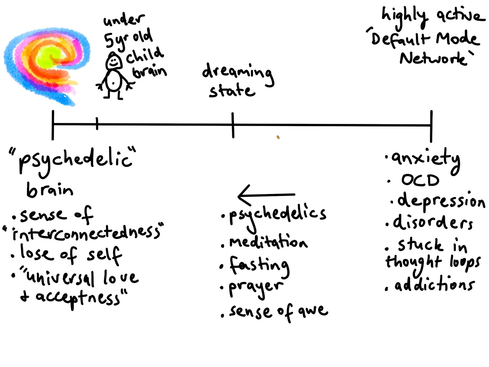

‘How to change your mind’ by micheal Pollan is about the resurgence of using psychedelics to treat mental conditions like depression, addictions & fear of death in cancer patients, among other things.
In the 1950s & 1960s the field had a very productive era of using it in psychotherapy sessions & one of the most effective treatment of alcoholism. It was made illegal in 1968 but since the late 1990s has had a renaissance in the medical field originally treating cancer patients with existential distress but now extended to a multitude of therapies.
One scientific theory of how psychedelics act on the brain, is that they lessen the ‘default mode network’ (DMN), the part of the brain that is responsible for generating our sense of self & suppresses things like childhood emotions & trauma. As the DMN gets suppressed, there’s an increase in communication between all parts of the brain. The DMN also plays the role of providing low energy interpretations of the world, falling back on what’s happened in the past. With the lessening of the DMN, it allows traumas, emotions & the way which life is perceived to be processed in novel ways, similar to how babies process the world. It creates high neuroplasticity, so after the drug wears off, the person is less susceptible to fall into previous thought patterns. It shakes up the snow globe, resettling in new ways.
The treatment involves prior sessions of preparation, preparing the patient for the journey & setting a clear intention of what they want to find out, like ‘i want to quit smoking’. The journey is taken along side a sober experienced guide (the role of a shaman) who will help them through difficult parts of their journey & be there for them. Here ‘set & setting’ are paramount to having a successful journey. Once the trip is finished, the patient will have a reintegration session with the therapist we’re they’ll recount their journey & interpret meaning behind what they’ve experienced.
It’s interesting that MRI scans of people on psychedelics have the same brain parts light up as experienced meditators. And it is thought that spiritual practices like prayer, meditation, breath work & fasting, play the same role of lessening the sense of self (the DMN), and allowing a sense of universal love & interconnectedness of all things. Even being in nature also increases this. A study of one group of people looking at trees swaying in the breeze, where much more likely to help a person who had fallen over, then another group who just looked at buildings.
The trials of using psychedelics in therapy is in phase 2 of FDA approval in America & similar in Europe. And results look very promising for the benefits these molecules can provide for the wellbeing of people & society. You would normally have one session of the drug & usually this is enough for noticeable long term benefits. (People who have mystical experiences have greater long term benefits.) Patients will have cues allowing them to recall their journey like the music they listened to, which can help them overcome onset of conditions like depression or alcoholism.
There hasn’t been much progress in the treatment of metal disorders since anti-depressant type drugs in the 80s (which are becoming less effective as a lot is the result of the placebo effect).